We are the proud, first cohort of the
VetsInTech &
DraftKings'
Web-Development
Program at
General Assembly. For three months, veterans, service members and
military-spouses
alike studied, learned and became Front-End Software Engineers. Enjoy your journey with us!
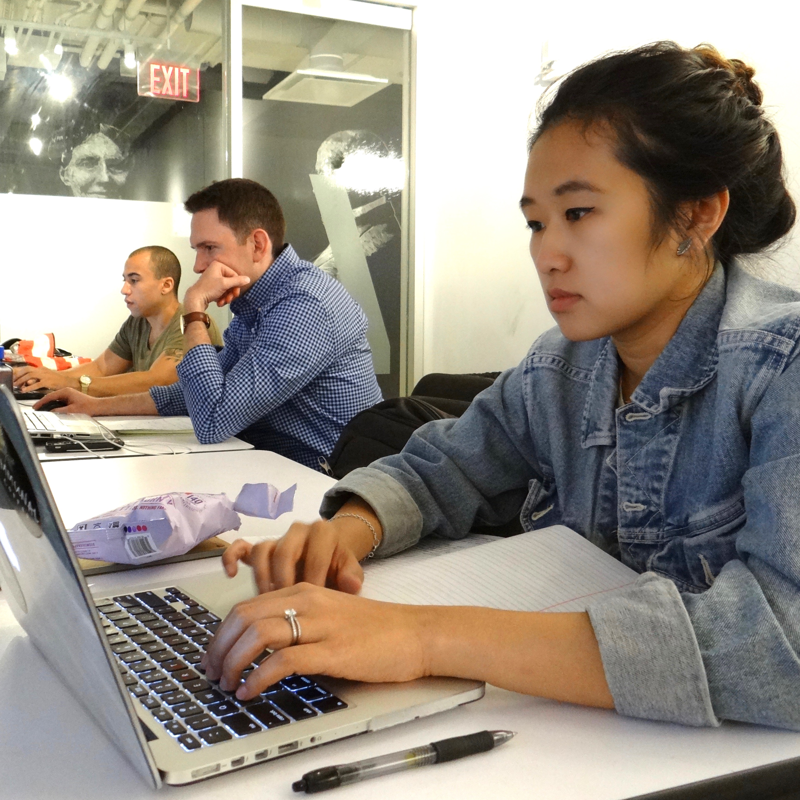
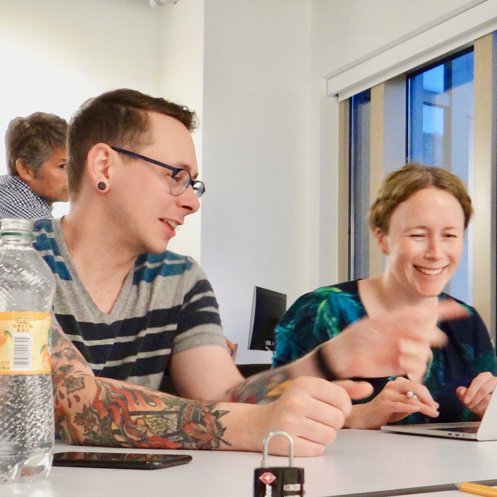
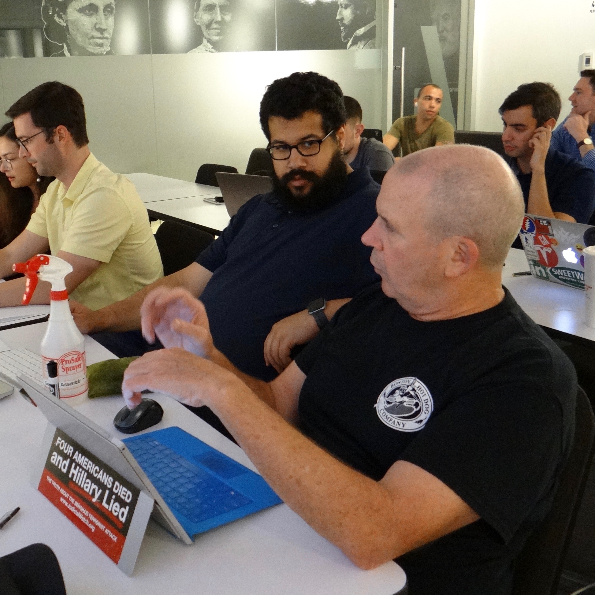
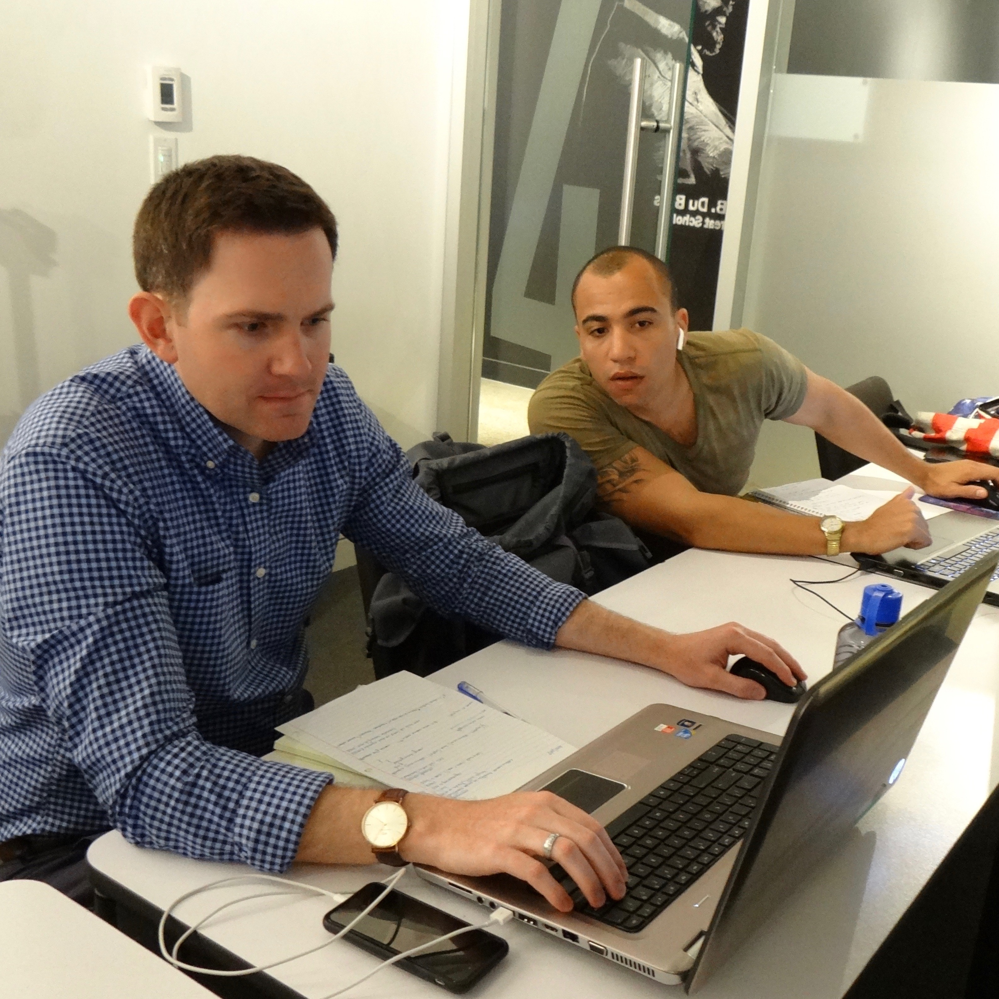
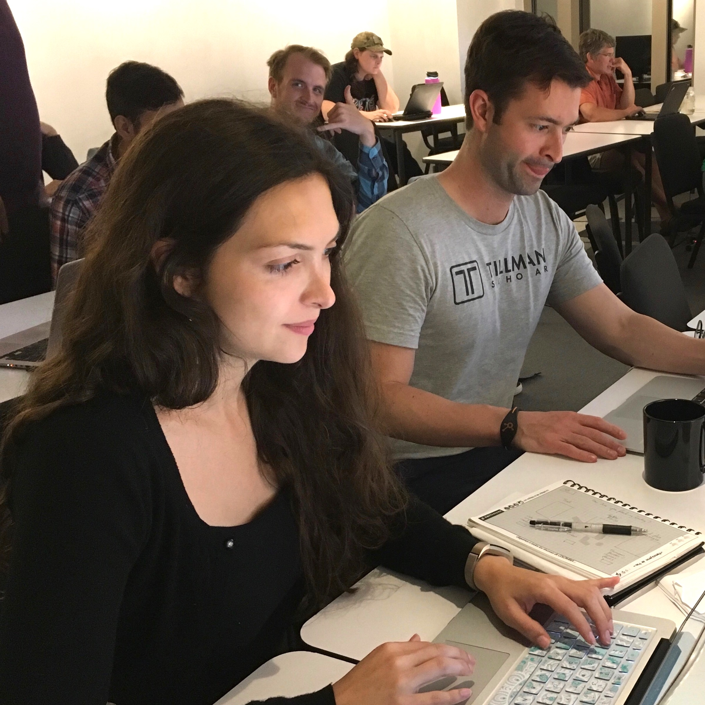
Our Sincere Thanks To
Katherine Webster
Chris Starling
Naida Rosenberger
Randy Crader
Sabrina Macias
To those who made this cohort possible: Thank you for providing us with the opportunity of
pursuing a new & rewarding
civilian career. For the thoughfulness, investment and effort involved in making this opportunity
possible:
Thank you !
★ Our Cohort ★
READ PROFILE
Sara M
ckinney
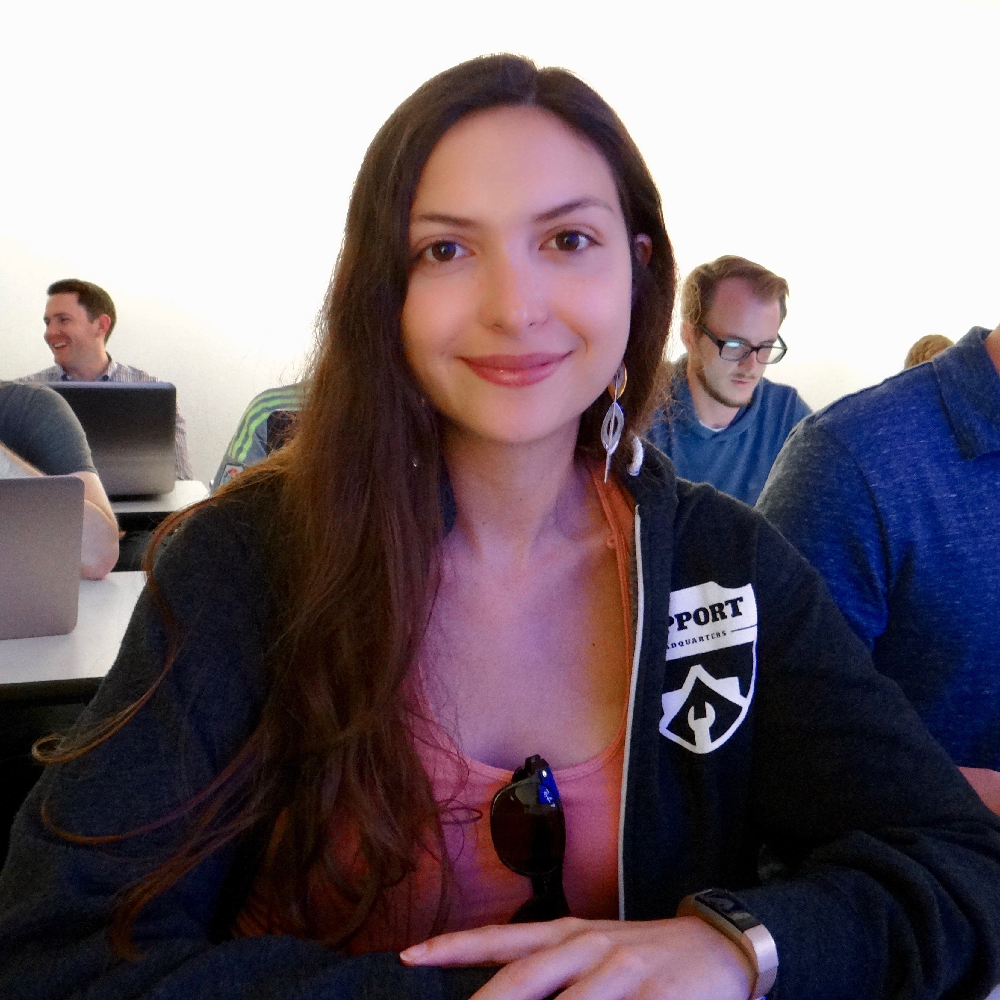
Branch : Air Force
Status : Military Spouse
Student Data :
Sara Hoyos is an Air Force spouse. Originally from Colombia, Sara completed her undergraduate in
law at University of Los
Andes and worked in Human Rights Law. Later, she moved to the United States to complete her
Master’s
Degree at Boston University in International Business Law. Sara now works with the Customer Support
team
at HubSpot, a technology firm in Cambridge, MA. She loves reading, baking and spending time with
her
family.
READ PROFILE
Wu Li
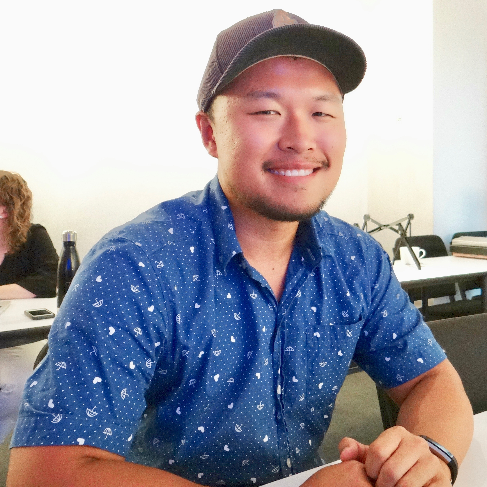
Branch: Air Force
Status: Veteran
Student Data:
Wu Li moved to Greater Boston area from Birmingham Alabama to serve in the United States Airforce.
After completion of his
USAF enlistment, he enrolled in Lesley University to study visual design and fine art. He is
currently
working as a visual designer for a non-profit organization. He wishes to gain more knowledge in the
front
end developing field, in order to improve his UX and design skills.
.
READ PROFILE
Kelly To
Branch: Air Force
Status: Military Spouse
Student Data:
Kelly is a (food-motivated) graphic designer with backgrounds in photography, videography and a bit
of UX/UI. She’s in the
progress of working towards career change as a full-time UI/UX designer. She and her husband
currently
live in Mountain View, CA. On her spare time, she loves to cook, travel, do yoga and be around
family
& friends. One of her random goals in life is to be knowledgeable in botany.
READ PROFILE
Stacy Soto
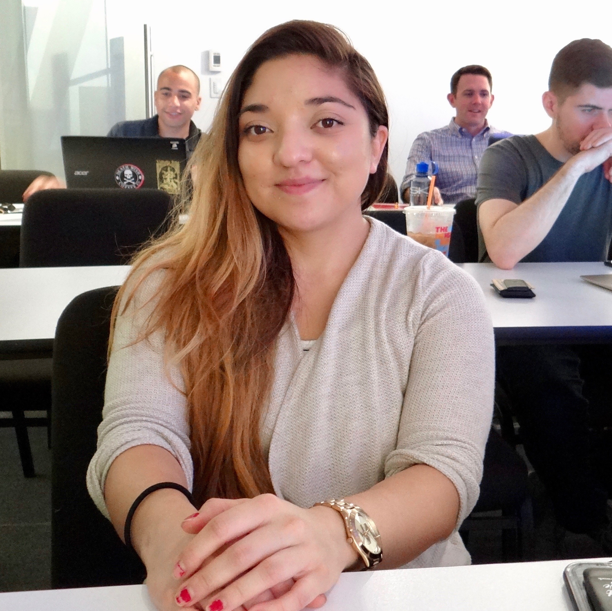
Branch: Air Force
Status: Active Duty
Student Data:
Stacey is an active duty member of the USAF. While taking the GA Front End Web Development course,
she was a designer for
Kessel Run -an agile military software development company.
READ PROFILE
Drew Greene
Branch : Marine Corps
Status : Veteran
Student Data:
Drew Greene served in the Marine Corps as a Light Armored Vehicle Crewman. He is currently studying
Entrepreneurship and
Supply Chain Management at Northeastern University in Boston, MA. Drew is learning web development
with
the intent of starting his own business making ecommerce website for online retailers.
READ PROFILE
Alfredo R. Pabon
Branch : US ARMY
Status : Veteran
Student Data :
Alfredo served as CBRN specialist in the Puerto Rico National Guard, 1-296 Infantry Regiment. After
7 years of service (and
two overseas deployments) Alfredo moved to Massachusetts, where he served as a public school
teacher.
Currently, Alfredo eat lots of bacon and studies to resume his civilian life as a software
developer.
.
READ PROFILE
Erik
deNeerGaard
Branch: Marine Corps
Status: Veteran
Student Data:
Erik served in the Marine Corps' Infantry as a Rifle Platoon Commander, Weapons Platoon Commander,
Company Executive Officer
and then as the OIC of the Regimental Special Training Section for Amphibious Raids. He also served
4
years as a battalion's Heavy Guns Platoon Commander in the Reserve. Currently, Erik works towards
an
MBA from Babson College, and starts a career at Fidelity Investments & Systems Analysis.
READ PROFILE
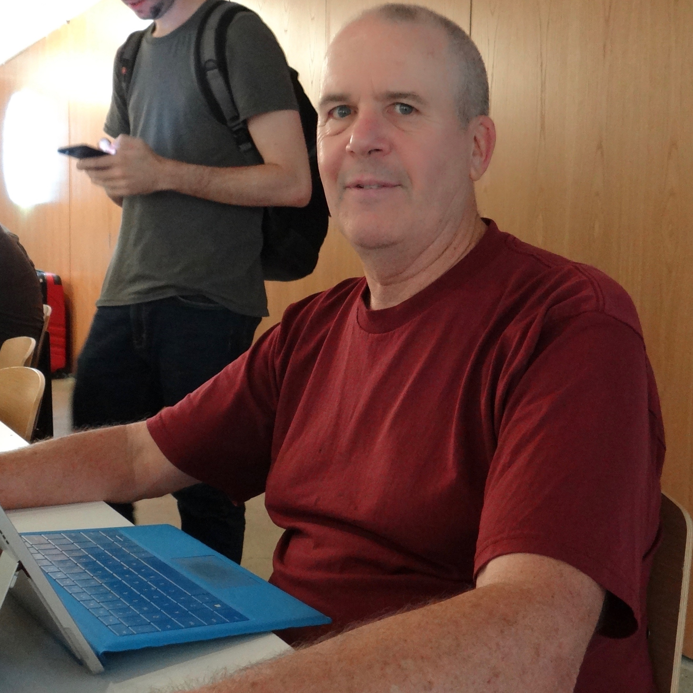
Phillip Sanberg
Branch: Marine Corps
Status: Veteran
Student Data:
Phil is a Vietnam era Marine Corps veteran who continues to enjoy an adventurous life in actitivies
such as skydiving, scuba
diving, and skiing. The "work hard to play hard" rules define his lifestyle. Phil also has a son who
joined
the US Marines as well, and who works firefigher today. Phil's current objective is to find a job as a
software
engineer in order to fund an adventurous lifestyle.
READ PROFILE
Matt Welch
Branch: Marine Corps
Status: Active Duty
Student Data:
Matt is a Marine Corps veteran who served as a Combat Engineer Officer for 11 years. He has been
working for 6 years in IT
in the financial services industry. He has a passion for problem solving and learning new things.
READ PROFILE
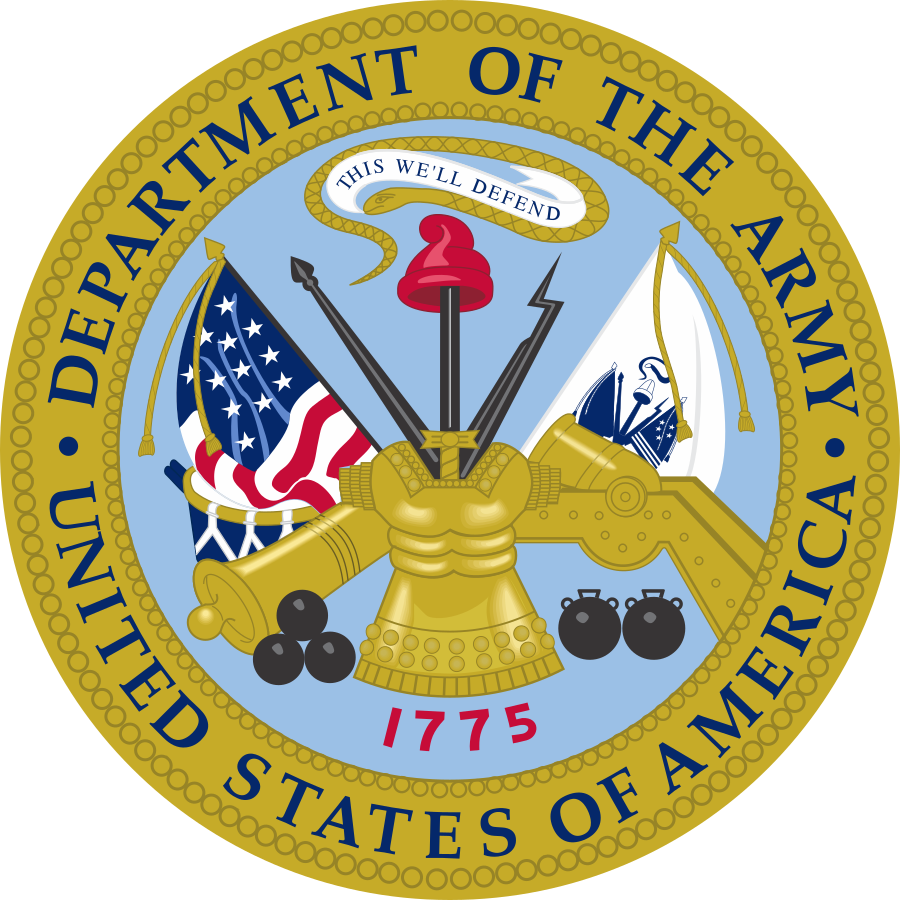
Wilson St.Pierre
Branch : US ARMY
Status : Veteran
Student Data :
During his first deployment to Iraq, Wilson served as an Army officer under former National
Security Advisor (then Colonel)
H.R. McMaster, of the 3rd Armored Cavalry Regiment. Wilson returned to New England in 2009 to
pursue
his MBA at Boston College, and has spent the last seven years working at a major financial services
firm
in downtown Boston.
.
READ PROFILE
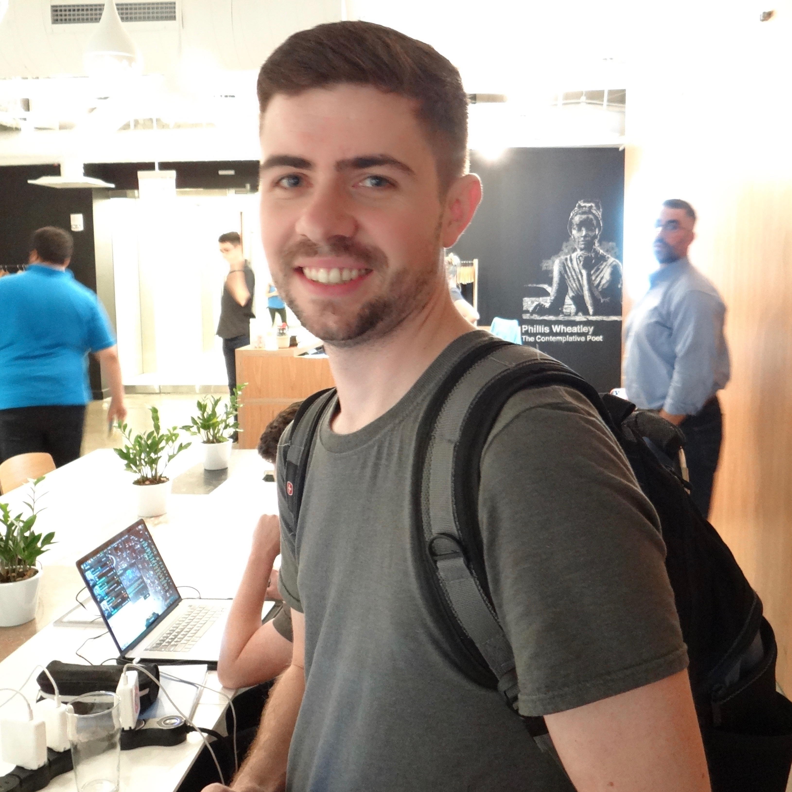
Vincent Bratica
Branch : US Air Force
Status : Service Member
Student Data :
Vincent serves as an RF Transmissions technician in the Massachusetts Air National Guard, 3D173. He
has been a service member
since 2008 having deployed to the Middle East in 2014. Currently, he is the NCOIC of his work
center
supervising seven fellow airmen. As a civilian, Vincent works as an network engineer for a
non-profit
tech company in Chelmsford, Massachusetts.
READ PROFILE
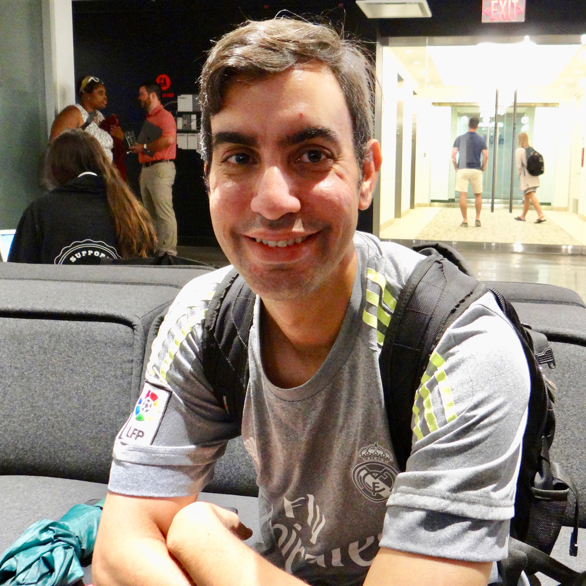
Jorge Herrera
Branch : US Navy
Status : Veteran
Student Data :
Jorge is a Navy Vet and UX/UI designer with experience as a Front-End Web Developer. He first came
to Boston for Graduate
School at Tufts University after leaving the Navy. Upon graduation with a MFA degree he decided to
stay
and break into the start-up tech industry where he has been working ever since. He continues to
learn
and improve his skills as web developer thanks to Vets in Tech program at General Assembly.
READ PROFILE
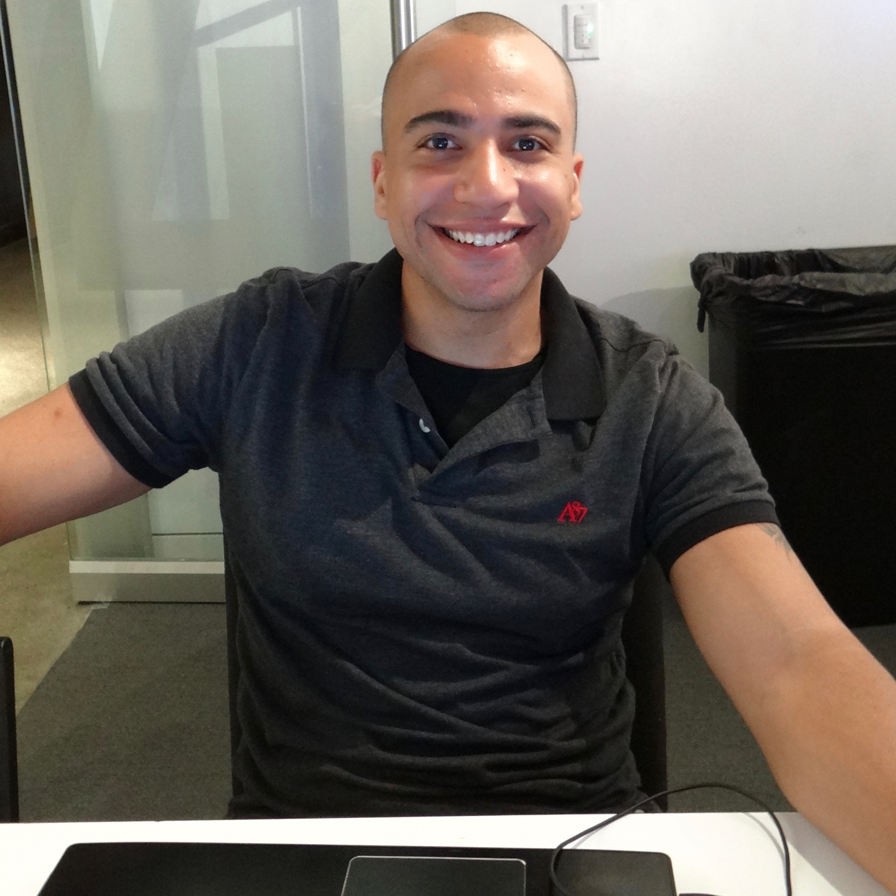
Martin Hovland
Branch: Marine Corps
Status: Veteran
Student Data:
Martin Hovland served as a medic in the U.S Army stationed at Fort drum with one deployment to
Iraq. Currently he is going
to school for international management at SNHU where he hopes to join the first eSports team in New
England.
His hobbies include gaming, eating everything in sight, yoga, and meditation. #'merica
READ PROFILE
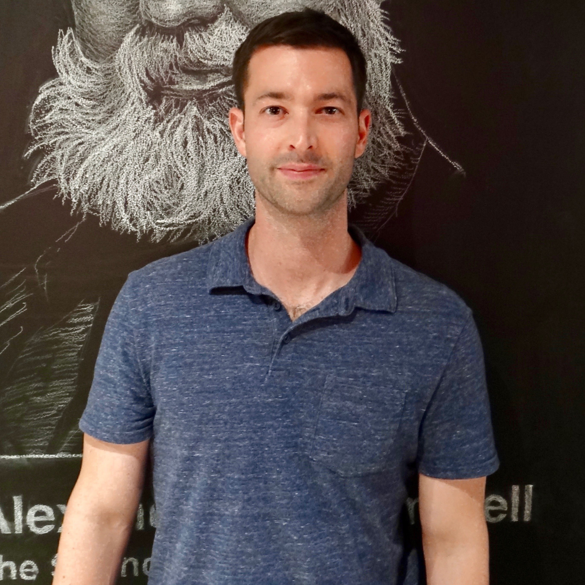
Austin McKinney
Branch: Air Force
Status: Veteran
Student Data:
Austin McKinney is not only a US Air Force Veteran, but also an active member of the Air National
Guard. Currently, his is
a Senior Manger at HubSpot.
.
READ PROFILE
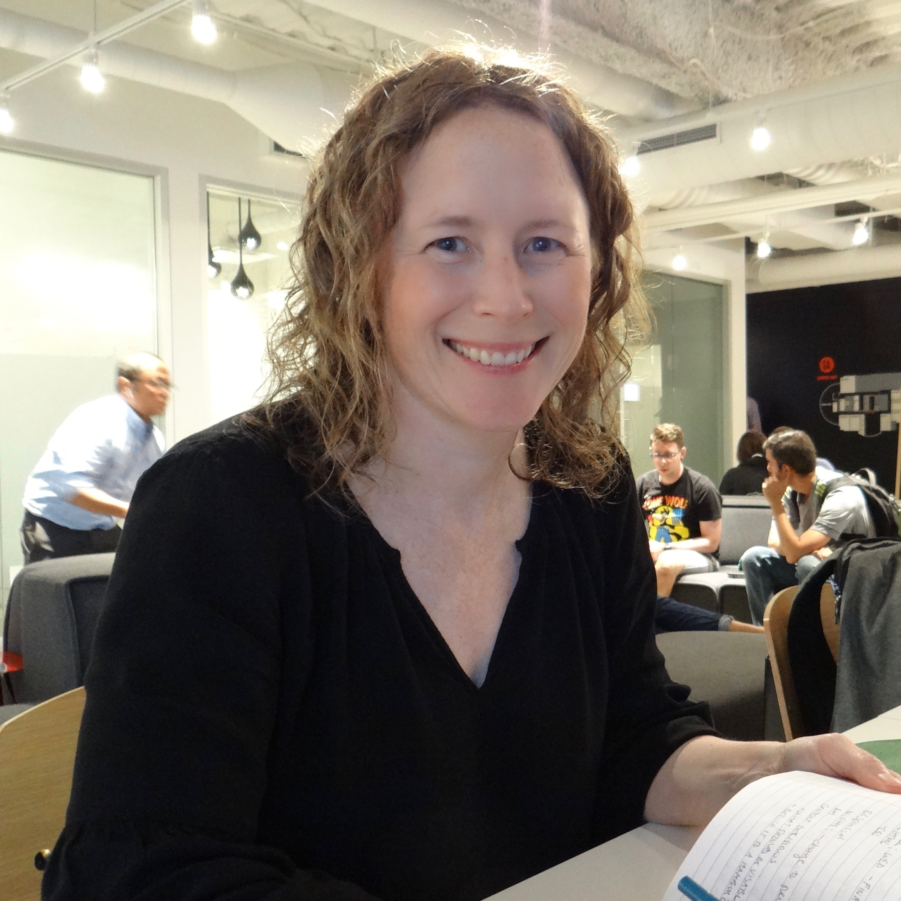
Julie Perusse
Branch: US Navy
Status: Military Spouse
Student Data:
I’m a content marketer, mom and now a newbie coder. My husband’s service in the Navy landed me with
VetsinTech and I’m so
grateful for the opportunity. My love of writing and marketing is strong but I’ve enjoyed coding so
much
I’m using my new skills to code emails for my current employer. You can learn my work and
experience here
READ PROFILE
Nick Wright
Branch: US Army
Status: Veteran
Student Data:
Nicholas Wright served in the U.S. Army from 2002 to 2015. Over the course of his career, he
deployed to Iraq a few times
with Infantry and Special Forces units. He has a BA in Political Science from the University of
Massachusetts
Boston.
Faculty
Learn about Leon
Leon Noel
Status: Civilian / Main Instructor
Data:
Leon Noel is founder & CEO of SocialSci. When he not performing his CEO duties at SocialSci, Leon
enjoys teaching tech skills
to students of all ages through General Assembly, Resilient Coders, and Citizen Schools in
Massachustts.
Learn about Will
Will Murray
Status: Civilian / Instructor
Data:
Will is a photographer and developer based in Boston, MA. He started in the tech industry as a
design intern, and then as
a computer technician at a high-volume retail store. Now he make awesome websites, and show others
how
to code.
About Our Experience
My experience at General Assembly has been truly amazing. After trying to learn from online
courses, none of them made me
feel as confident about my skills as Leon and Will. I can't speak highly enough about our
instructors.
Drew Greene
Taking this course gave me the "pieces of the puzzle" I needed to build this website! Great
experience, around great people.
I feel confident enough to show up to a company and market myself as a front-end web developer.
Alfredo Rafael
A fantastic experience that provided us with the opportunity to learn new skills at GA. (...)
Two fantastic
instructors who always took the time (in and out of class) to ensure every student understood the
material.
Vincent